<title>Manuel Maintenance Drugcam</title>
<meta name="claude:viewport-fit-sides" content="cover">
<link rel="stylesheet" href="https://fonts.googleapis.com/css2?family=JetBrains+Mono:wght@400;500&display=swap">
<style>
/* Mise en page : colonne de lecture unique, bandeaux pleine largeur pour la
   couverture et les intercalaires. Tokens repris du EUREKAM Design System. */
@font-face{font-family:"Sole Sans";src:url("fonts/SoleSans-Regular.woff2") format("woff2");font-weight:400;font-style:normal;font-display:swap}
@font-face{font-family:"Sole Sans";src:url("fonts/SoleSans-SemiBold.woff2") format("woff2");font-weight:600;font-style:normal;font-display:swap}
@font-face{font-family:"Sole Sans";src:url("fonts/SoleSans-Bold.woff2") format("woff2");font-weight:700;font-style:normal;font-display:swap}

:root{
  color-scheme: light;
  /* surfaces */
  --surface-page:#fafafa; --surface-card:#ffffff; --surface-sunken:#f4f6f7;
  --surface-brand:#23a6a0; --surface-inverse:#2e2d2d;
  /* texte */
  --fg-1:#2e2d2d; --fg-2:#6e7274; --fg-3:#9ca6ac; --fg-on-brand:#ffffff;
  --text-link:#3d7570; --text-link-hover:#2f5b57;
  /* accents */
  --accent-primary:#23a6a0; --accent-primary-press:#187873;
  --accent-highlight:#ff9955; --accent-secondary:#7bacdd; --accent-slate:#6e7274;
  /* bordures */
  --border-subtle:#ebebeb; --border-default:#dadada; --border-strong:#a5a4a4;
  /* statuts */
  --success-50:#e8f5ee; --success-500:#2e9e6a;
  --warning-50:#fbf2e4; --warning-500:#d9922b;
  --danger-50:#faeae8;  --danger-500:#c8453c;
  --info-50:#eff5fc;    --info-500:#5a90c8;
  --teal-50:#eef6f5;
  /* typographie */
  --font-display:"Sole Sans","Outfit",ui-sans-serif,system-ui,sans-serif;
  --font-sans:"Sole Sans",ui-sans-serif,system-ui,sans-serif;
  --font-mono:"JetBrains Mono",ui-monospace,monospace;
  /* formes */
  --radius-sm:4px; --radius-md:6px; --radius-lg:10px; --radius-xl:16px; --radius-pill:999px;
  --shadow-1:0 1px 2px rgba(46,45,45,.06),0 1px 1px rgba(46,45,45,.04);
  --shadow-2:0 2px 6px rgba(46,45,45,.08),0 1px 2px rgba(46,45,45,.05);
  --shadow-3:0 8px 24px rgba(46,45,45,.12),0 2px 6px rgba(46,45,45,.06);
}

*{box-sizing:border-box}
body{
  background:var(--surface-page); color:var(--fg-1);
  font-family:var(--font-sans); font-size:15px; line-height:1.5;
  margin:0; -webkit-font-smoothing:antialiased;
}
.wrap{
  max-width:860px; margin:0 auto;
  padding-left:max(16px,env(safe-area-inset-left,0px));
  padding-right:max(16px,env(safe-area-inset-right,0px));
}
.band{width:100%}
.band>.wrap{padding-block:48px}

/* ---------- couverture ---------- */
.cover{background:var(--surface-card);border-bottom:1px solid var(--border-subtle)}
.cover>.wrap{padding-block:40px 36px;display:flex;flex-direction:column;gap:24px}
.cover-top{display:flex;align-items:flex-start;justify-content:space-between;gap:24px;flex-wrap:wrap}
.cover img{width:168px;height:auto}
.cover .meta{font-size:13px;color:var(--fg-2);text-align:right;min-width:0}
.cover .meta b{color:var(--fg-1);font-weight:600}
.overline{
  font-size:11px;font-weight:600;letter-spacing:.14em;text-transform:uppercase;
  color:var(--accent-primary);margin:0;
}
.cover h1{
  font-family:var(--font-display);font-weight:600;font-size:clamp(34px,6vw,48px);
  line-height:1.1;margin:8px 0 0;text-wrap:balance;color:var(--fg-1);
}
.rule{width:77px;height:6px;background:var(--accent-highlight);border-radius:var(--radius-xs);margin-top:18px}
.lede{font-size:17px;line-height:1.5;color:var(--fg-2);margin:0;max-width:62ch}

/* ---------- sommaire ---------- */
.toc{background:var(--surface-sunken)}
.toc>.wrap{padding-block:32px}
.toc h2{font-family:var(--font-display);font-size:18px;font-weight:600;margin:0 0 16px}
.toc ol{list-style:none;margin:0;padding:0;display:grid;gap:2px;
  grid-template-columns:repeat(auto-fit,minmax(260px,1fr));counter-reset:toc}
.toc li{counter-increment:toc;min-width:0}
.toc a{
  display:flex;gap:12px;align-items:baseline;padding:8px 10px;border-radius:var(--radius-md);
  color:var(--fg-1);text-decoration:none;font-size:14px;
}
.toc a:hover{background:var(--surface-card);color:var(--text-link-hover)}
.toc a::before{
  content:counter(toc,decimal-leading-zero);font-family:var(--font-mono);font-size:12px;
  color:var(--accent-primary);font-weight:500;flex:none;
}

/* ---------- sections ---------- */
section{scroll-margin-top:16px}
.sec>.wrap{padding-block:40px}
h2.sec-title{
  font-family:var(--font-display);font-weight:600;font-size:clamp(24px,4vw,32px);
  line-height:1.2;margin:0;text-wrap:balance;
}
.kicker{font-family:var(--font-mono);font-size:13px;font-weight:500;color:var(--accent-primary);margin:0 0 6px}
.sec-rule{width:77px;height:6px;background:var(--accent-highlight);margin:14px 0 24px}
h3{font-family:var(--font-display);font-weight:600;font-size:22px;line-height:1.3;margin:32px 0 10px;text-wrap:balance}
h4{font-family:var(--font-display);font-weight:600;font-size:17px;line-height:1.35;margin:24px 0 8px}
p{margin:0 0 14px;max-width:68ch}
ul,ol{margin:0 0 14px;padding-left:22px;max-width:68ch}
li{margin:0 0 6px}
li>ul,li>ol{margin-top:6px}
a{color:var(--text-link)}
a:hover{color:var(--text-link-hover)}
strong{font-weight:600}
code{
  font-family:var(--font-mono);font-size:.86em;background:var(--surface-sunken);
  border:1px solid var(--border-subtle);border-radius:var(--radius-sm);padding:1px 5px;
}
.num{font-variant-numeric:tabular-nums}

/* ---------- blocs (motif du masque : barre colorée à gauche) ---------- */
.bloc{
  background:var(--surface-sunken);border-left:11px solid var(--accent-primary);
  border-radius:0 var(--radius-lg) var(--radius-lg) 0;
  padding:16px 20px;margin:0 0 18px;max-width:68ch;
}
.bloc>:last-child{margin-bottom:0}
.bloc.attention{border-left-color:var(--warning-500);background:var(--warning-50)}
.bloc.danger{border-left-color:var(--danger-500);background:var(--danger-50)}
.bloc.astuce{border-left-color:var(--accent-secondary);background:var(--info-50)}
.bloc .titre{
  font-family:var(--font-display);font-weight:600;font-size:13px;letter-spacing:.06em;
  text-transform:uppercase;margin:0 0 6px;color:var(--fg-2);
}

/* ---------- figures ---------- */
figure{margin:0 0 24px}
figure img{
  display:block;width:100%;height:auto;max-width:100%;
  border:1px solid var(--border-default);border-radius:var(--radius-lg);
  box-shadow:var(--shadow-2);background:var(--surface-card);
}
figcaption{
  font-size:13px;color:var(--fg-2);margin-top:10px;padding-left:12px;
  border-left:3px solid var(--accent-highlight);max-width:68ch;
}
figcaption b{color:var(--fg-1);font-weight:600}

/* ---------- tableaux ---------- */
.tbl{overflow-x:auto;margin:0 0 20px;border:1px solid var(--border-subtle);
  border-radius:var(--radius-lg);background:var(--surface-card);box-shadow:var(--shadow-1)}
table{border-collapse:collapse;width:100%;font-size:14px;min-width:460px}
th,td{text-align:left;padding:10px 14px;border-bottom:1px solid var(--border-subtle);vertical-align:top}
th{
  font-family:var(--font-display);font-weight:600;font-size:12px;letter-spacing:.06em;
  text-transform:uppercase;color:var(--fg-2);background:var(--surface-sunken);white-space:nowrap;
}
tbody tr:last-child td{border-bottom:none}
td code{white-space:nowrap}

/* ---------- pastilles de statut ---------- */
.pastille{
  display:inline-block;border-radius:var(--radius-pill);padding:2px 10px;
  font-size:12px;font-weight:600;white-space:nowrap;
}
.p-vert{background:var(--success-50);color:#1f6b48}
.p-jaune{background:var(--warning-50);color:#8a5c12}
.p-rouge{background:var(--danger-50);color:#99302a}
.p-bleu{background:var(--info-50);color:#2f5a86}
.p-gris{background:var(--surface-sunken);color:var(--fg-2)}

/* ---------- parcours ---------- */
.parcours{
  display:flex;flex-wrap:wrap;gap:8px;align-items:stretch;
  background:var(--surface-card);border:1px solid var(--border-subtle);
  border-radius:var(--radius-lg);padding:18px;margin:0 0 22px;box-shadow:var(--shadow-1);
}
.etape{
  flex:1 1 150px;min-width:0;background:var(--surface-sunken);
  border-left:6px solid var(--accent-primary);border-radius:0 var(--radius-md) var(--radius-md) 0;
  padding:10px 12px;
}
.etape:nth-child(2){border-left-color:var(--accent-secondary)}
.etape:nth-child(3){border-left-color:var(--accent-highlight)}
.etape:nth-child(4){border-left-color:var(--accent-slate)}
.etape b{display:block;font-family:var(--font-display);font-size:14px;font-weight:600;margin-bottom:2px}
.etape span{font-size:12.5px;color:var(--fg-2)}

/* ---------- FAQ ---------- */
details{
  background:var(--surface-card);border:1px solid var(--border-subtle);
  border-radius:var(--radius-lg);padding:0;margin:0 0 8px;box-shadow:var(--shadow-1);
}
summary{
  cursor:pointer;padding:12px 16px;font-weight:600;font-family:var(--font-display);
  font-size:15px;list-style:none;display:flex;gap:10px;align-items:baseline;
}
summary::-webkit-details-marker{display:none}
summary::before{content:"+";color:var(--accent-primary);font-weight:700;flex:none;font-size:16px}
details[open] summary::before{content:"\2013"}
details[open] summary{border-bottom:1px solid var(--border-subtle)}
details .corps{padding:14px 16px 4px}
details .corps>:last-child{margin-bottom:0}
summary:focus-visible,a:focus-visible{outline:none;box-shadow:0 0 0 3px rgba(101,168,162,.35);border-radius:var(--radius-sm)}

/* ---------- pied ---------- */
.pied{background:var(--surface-inverse);color:#d8d6d6}
.pied>.wrap{padding-block:32px}
.pied h2{font-family:var(--font-display);font-size:18px;font-weight:600;color:#fff;margin:0 0 10px}
.pied p{color:#d8d6d6;max-width:68ch}
.pied a{color:#9fd4d0}
.legal{font-size:12.5px;color:#9b9a9a;margin-top:18px;border-top:1px solid #454343;padding-top:14px}

@media (max-width:560px){
  .cover .meta{text-align:left}
  .band>.wrap,.sec>.wrap{padding-block:32px}
}
@media (prefers-reduced-motion:reduce){*{transition:none!important;animation:none!important}}

/* ---------- impression / PDF ---------- */
@media print{
  @page{size:A4;margin:15mm 13mm}
  html,body{background:#fff!important}
  :root{padding:0!important}
  body{font-size:10.5pt;line-height:1.45;
    -webkit-print-color-adjust:exact;print-color-adjust:exact}
  .wrap{max-width:none;padding-left:0;padding-right:0}
  .band{background:transparent!important}
  .band>.wrap{padding-block:0}
  .cover{border-bottom:none}
  .cover>.wrap{padding-block:0 8mm}
  .cover img{width:150px}
  .toc>.wrap{padding-block:6mm 0}
  .toc a{padding:4px 0}
  .toc a:hover{background:none}
  section.sec{break-before:page}
  section.sec>.wrap{padding-block:0}
  h2.sec-title,h3,h4{break-after:avoid}
  p,li{orphans:3;widows:3}
  figure,.bloc,.tbl,.parcours,details{break-inside:avoid}
  figure img{box-shadow:none;border-color:#c9c9c9}
  .tbl{overflow:visible;box-shadow:none}
  table{min-width:0;font-size:9.5pt}
  thead{display:table-header-group}
  tr{break-inside:avoid}
  details{box-shadow:none;break-inside:avoid;margin-bottom:6px}
  details>.corps{display:block!important}
  details::details-content{content-visibility:visible!important;display:block!important}
  summary{padding-bottom:6px}
  summary::before{content:""!important;display:none}
  a{text-decoration:none}
  .pied{background:#fff!important;color:var(--fg-1)!important;
    border-top:2px solid var(--accent-primary)}
  .pied>.wrap{padding-block:7mm 0}
  .pied h2{color:var(--fg-1)!important}
  .pied p{color:var(--fg-2)!important}
  .pied a{color:var(--text-link)!important}
  .legal{color:var(--fg-3)!important;border-top-color:var(--border-subtle)!important}
  .pied code{background:var(--surface-sunken)!important;
    border-color:var(--border-subtle)!important;color:var(--fg-1)!important}
}
</style>

<header class="band cover">
  <div class="wrap">
    <div class="cover-top">
      
      <div class="meta">
        Module <b>eurekam_maintenance</b><br>
        Version <b class="num">18.0.2.0.0</b> — Odoo 18 Enterprise<br>
        Mise à jour <b class="num">20 novembre 2026</b>
      </div>
    </div>
    <div>
      <p class="overline">Manuel utilisateur</p>
      <h1>Suivi des contrats de maintenance Drugcam</h1>
      <div class="rule"></div>
    </div>
    <p class="lede">Ce manuel accompagne les équipes commerciale, ADV et support dans
    l'usage quotidien du module. Il remplace le suivi historique tenu dans Notion
    (table « Assistance DO ») et décrit le parcours réel, du contrat signé jusqu'à
    la facture validée.</p>
    <div class="bloc">
      <p class="titre">À propos des copies d'écran</p>
      <p>Toutes les copies d'écran de ce manuel proviennent de l'environnement de
      <strong>recette</strong> et montrent des données de test. Les écrans de production
      sont identiques ; seules les données diffèrent.</p>
    </div>
  </div>
</header>

<nav class="band toc">
  <div class="wrap">
    <h2>Sommaire</h2>
    <ol>
      <li><a href="#public">À qui s'adresse ce module</a></li>
      <li><a href="#vocabulaire">Le vocabulaire à connaître</a></li>
      <li><a href="#prerequis">Avant de commencer</a></li>
      <li><a href="#parcours">Du contrat à la facture</a></li>
      <li><a href="#cas">Les cas particuliers</a></li>
      <li><a href="#support">Voir le statut d'un client</a></li>
      <li><a href="#suivi">Suivi et tableaux de bord</a></li>
      <li><a href="#configuration">Configuration</a></li>
      <li><a href="#faq">Questions fréquentes</a></li>
      <li><a href="#glossaire">Glossaire des champs</a></li>
    </ol>
  </div>
</nav>

<section id="public" class="band sec">
  <div class="wrap">
    <p class="kicker">• 01</p>
    <h2 class="sec-title">À qui s'adresse ce module</h2>
    <div class="sec-rule"></div>
    <p>Le module centralise dans Odoo ce qui était auparavant réparti entre Notion et
    plusieurs fichiers : les contrats pluriannuels, les bons de commande clients, la
    génération des factures selon la cadence négociée, les renouvellements avec révision
    Syntec, les alertes d'expiration et l'historique par établissement.</p>
    <div class="tbl"><table>
      <thead><tr><th>Profil</th><th>Ce que vous faites dans le module</th></tr></thead>
      <tbody>
        <tr><td><strong>Commercial</strong></td><td>Vous créez et activez les contrats, saisissez les bons de commande clients, renouvelez.</td></tr>
        <tr><td><strong>ADV</strong></td><td>Vous validez les commandes, facturez les échéances, suivez les expirations.</td></tr>
        <tr><td><strong>Support</strong></td><td>Vous consultez le statut maintenance d'un client, en lecture seule.</td></tr>
        <tr><td><strong>Manager</strong></td><td>Vous configurez les listes, gérez les droits et disposez seul de la suppression.</td></tr>
      </tbody>
    </table></div>
  </div>
</section>

<section id="vocabulaire" class="band sec" style="background:var(--surface-card)">
  <div class="wrap">
    <p class="kicker">• 02</p>
    <h2 class="sec-title">Le vocabulaire à connaître</h2>
    <div class="sec-rule"></div>
    <div class="tbl"><table>
      <thead><tr><th>Terme</th><th>Sens</th></tr></thead>
      <tbody>
        <tr><td><strong>Contrat de maintenance</strong></td><td>Le contrat signé avec le client, couvrant de 1 à 5 ans. Identifié par un numéro <code>MAINT/AAAA/NNNN</code>.</td></tr>
        <tr><td><strong>Ligne annuelle</strong></td><td>Une ligne par année du contrat, avec son montant. Un contrat 2024→2028 porte cinq lignes annuelles.</td></tr>
        <tr><td><strong>Cadence de facturation</strong></td><td>Annuelle, semestrielle, trimestrielle ou période intégrale. Détermine en combien de factures une année est découpée.</td></tr>
        <tr><td><strong>Termes échus / à échoir</strong></td><td>Date d'émission de la facture : fin de période pour « échu », début pour « à échoir ».</td></tr>
        <tr><td><strong>BC client</strong></td><td>Le bon de commande que le client envoie pour déclencher la facturation. Stocké dans Odoo comme commande client.</td></tr>
        <tr><td><strong>Commande client</strong></td><td>Le <code>sale.order</code> qui matérialise le BC. Il porte une ligne par future facture.</td></tr>
        <tr><td><strong>Établissement</strong></td><td>Un contact marqué « Établissement de maintenance » : hôpital, clinique, distributeur.</td></tr>
        <tr><td><strong>Marché</strong></td><td>UniHA, AGEPS, RESAH, Privé. Plusieurs valeurs possibles sur un même contrat, et liste librement modifiable.</td></tr>
        <tr><td><strong>Génération</strong></td><td>Version du produit Drugcam : GEN1, GEN2, Upgrade GEN2. Liste librement modifiable.</td></tr>
        <tr><td><strong>Révision Syntec</strong></td><td>Indexation annuelle des prix sur l'indice Syntec, en pratique de l'ordre de <span class="num">3 %</span> par an.</td></tr>
      </tbody>
    </table></div>
  </div>
</section>

<section id="prerequis" class="band sec">
  <div class="wrap">
    <p class="kicker">• 03</p>
    <h2 class="sec-title">Avant de commencer</h2>
    <div class="sec-rule"></div>

    <h3>Vérifier vos droits</h3>
    <p>Deux profils existent. Demandez à un manager de vous attribuer celui qui
    correspond à votre rôle, via <strong>Configuration → Utilisateurs</strong>.</p>
    <ul>
      <li><strong>Maintenance Eurekam → Utilisateur</strong> : gérer les contrats.</li>
      <li><strong>Maintenance Eurekam → Manager</strong> : en plus, configurer et supprimer.</li>
    </ul>
    <p>Si le menu <strong>Maintenance</strong> n'apparaît pas dans la barre du haut,
    c'est que le groupe ne vous a pas encore été attribué.</p>

    <h3>Vérifier que l'établissement existe</h3>
    <p>Avant de créer un contrat, ouvrez <strong>Contacts</strong> et cherchez
    l'établissement. S'il existe, vérifiez que la case
    <strong>Établissement de maintenance</strong> est cochée : elle se trouve juste
    au-dessus des onglets du formulaire. S'il n'existe pas, créez la fiche puis cochez
    la case.</p>
    <figure>
      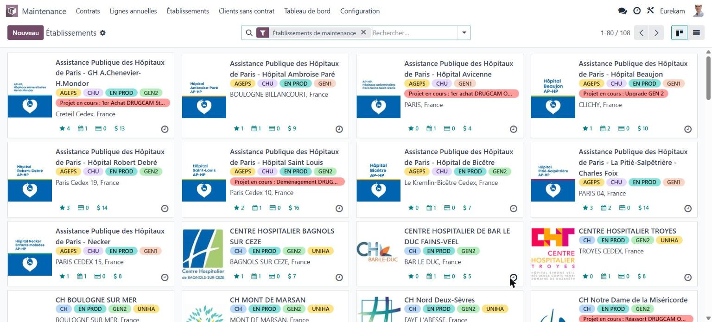
      <figcaption><b>Maintenance → Établissements</b> présente les contacts marqués
      « établissement de maintenance ». Les étiquettes (CH, EN PROD, GEN2, UniHA)
      sont les étiquettes Contact standard d'Odoo.</figcaption>
    </figure>
    <p>Une fois la case cochée, un onglet <strong>Maintenance Eurekam</strong> apparaît
    sur la fiche. Renseignez-y le numéro de département, le statut de l'établissement,
    la centrale d'achat, le nombre de postes, les statuts de modules et les équipements
    spéciaux.</p>
    <div class="bloc astuce">
      <p class="titre">Où se gèrent le type et la génération</p>
      <p>Le type d'établissement (CH, CHU, CLCC, université) et la version Drugcam
      se gèrent dans les <strong>Étiquettes</strong> standard du contact, affichées
      dans le bandeau du formulaire, et non dans l'onglet Maintenance.</p>
    </div>
  </div>
</section>

<section id="parcours" class="band sec" style="background:var(--surface-card)">
  <div class="wrap">
    <p class="kicker">• 04</p>
    <h2 class="sec-title">Du contrat à la facture</h2>
    <div class="sec-rule"></div>
    <p>Le parcours est toujours le même. Chaque facture naît d'un devis : il n'existe
    plus de facturation directe depuis le contrat.</p>

    <div class="parcours">
      <div class="etape"><b>1. Le contrat</b><span>Création, activation, génération des lignes annuelles.</span></div>
      <div class="etape"><b>2. Le devis</b><span>Créé pour une année, découpé selon la cadence, envoyé au client.</span></div>
      <div class="etape"><b>3. Le BC client</b><span>À réception, la commande est confirmée.</span></div>
      <div class="etape"><b>4. Les factures</b><span>Une facture par échéance, à partir des lignes de la commande.</span></div>
    </div>

    <h3>4.1 Créer un contrat</h3>
    <p>Ouvrez <strong>Maintenance → Contrats → Nouveau</strong>, puis renseignez la
    fiche. Le numéro <code>MAINT/AAAA/NNNN</code> est attribué à l'enregistrement.</p>
    <figure>
      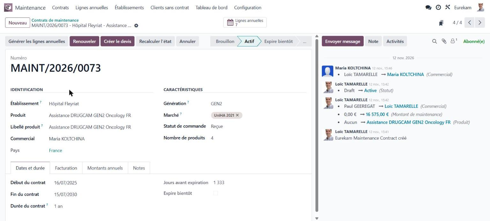
      <figcaption>La fiche contrat. En haut, la barre d'état
      (<b>Brouillon → Actif → Expire bientôt</b>) et les boutons d'action. À gauche
      l'identification, à droite les caractéristiques commerciales. Le fil de discussion,
      à droite, conserve l'historique de chaque modification.</figcaption>
    </figure>
    <p><strong>Identification.</strong> L'établissement est le client ; il est
    automatiquement marqué « établissement de maintenance » à la création du contrat.
    Le <strong>libellé produit</strong> se remplit tout seul dès que vous choisissez un
    produit, à partir du descriptif du devis de la fiche article. C'est ce texte qui sera
    repris sur les lignes de devis et de facture ; vous pouvez le corriger à la main.</p>
    <p><strong>Caractéristiques.</strong> La génération, le marché et le statut de
    commande sont des listes que vos managers font évoluer sans intervention technique.
    Le champ Marché accepte plusieurs valeurs : un établissement dont les postes relèvent
    de deux marchés différents se décrit sans contorsion.</p>

    <h4>L'onglet Facturation</h4>
    <figure>
      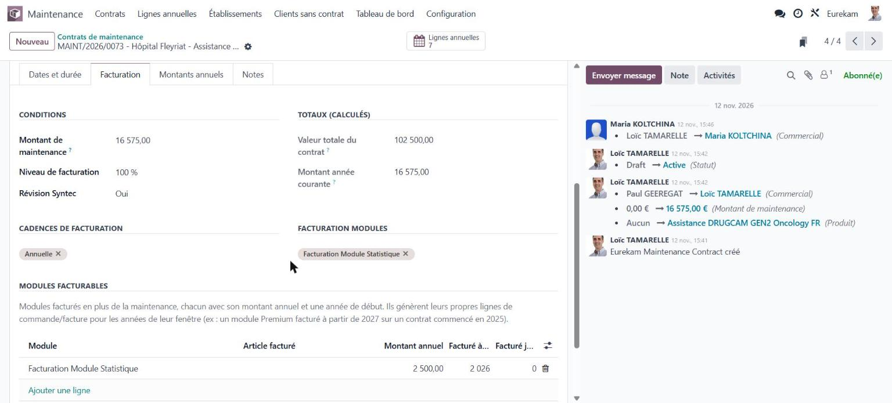
      <figcaption>L'onglet <b>Facturation</b> regroupe les conditions, les totaux
      calculés, les cadences et les modules facturables.</figcaption>
    </figure>
    <div class="bloc attention">
      <p class="titre">Le montant de maintenance n'est pas le montant facturé</p>
      <p>Le <strong>montant de maintenance</strong> est un montant de référence. Il sert
      uniquement à pré-remplir les lignes au premier clic sur « Générer les lignes
      annuelles ». La valeur du contrat et les factures sont construites à partir de
      l'onglet <strong>Montants annuels</strong>. Si le montant évolue d'une année sur
      l'autre — le cas le plus fréquent — c'est là qu'il faut le saisir, année par année,
      sans oublier l'année en cours.</p>
    </div>
    <p><strong>Les cadences</strong> se composent de deux choix : une cadence de période
    (annuelle, semestrielle, trimestrielle ou période intégrale) et un terme (à échu ou
    à échoir). Si vous en cumulez deux de même nature, Odoo refuse l'enregistrement.</p>

    <h3>4.2 Activer le contrat</h3>
    <p>Cliquez <strong>Activer</strong> dans le bandeau. L'état passe de Brouillon à
    Actif. Si la date de fin est déjà passée, le contrat bascule directement en Expiré ;
    si elle tombe dans les 90 jours, en Expire bientôt.</p>
    <div class="bloc">
      <p class="titre">Condition d'activation</p>
      <p>Les dates de début et de fin doivent être renseignées, et surtout un
      <strong>article Odoo</strong> doit être rattaché au contrat — le libellé produit
      seul ne suffit pas. La facture en a besoin pour résoudre le compte de produits et
      la TVA automatiquement.</p>
    </div>

    <h3>4.3 Générer les lignes annuelles</h3>
    <p>Cliquez <strong>Générer les lignes annuelles</strong>. Une ligne est créée par
    année couverte, chacune reprenant le montant de référence. Ajustez ensuite chaque
    année dans l'onglet <strong>Montants annuels</strong>.</p>
    <figure>
      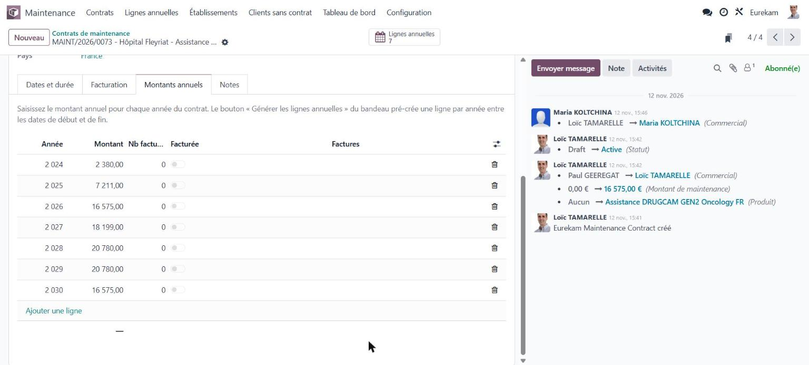
      <figcaption>Un contrat réel, dont le montant progresse chaque année sous l'effet
      de la révision Syntec. Le total du contrat et le montant de l'année courante se
      recalculent à chaque modification.</figcaption>
    </figure>

    <h3>4.4 Créer le devis, puis la commande</h3>
    <p>Cliquez <strong>Créer le devis</strong> dans le bandeau du contrat. L'assistant
    s'ouvre et propose la première année non encore couverte.</p>
    <ul>
      <li><strong>Référence BC client</strong> : laissez ce champ vide tant que le bon de
      commande n'est pas arrivé. On crée d'abord le devis, on renseigne la référence
      ensuite sur la commande.</li>
      <li><strong>Périmètre</strong> : « Année découpée selon la cadence » est le cas
      standard. « Intégralité du contrat » couvre toutes les années restantes en une
      fois, pour un paiement d'avance.</li>
      <li><strong>Révision Syntec</strong> : proposée seulement si le contrat porte
      Syntec = Oui. Le montant révisé est modifiable au centime près pour coller au BC,
      et il est <strong>aussi reporté sur la ligne annuelle du contrat</strong>, avec une
      trace dans le fil de discussion.</li>
    </ul>
    <p>Seules les périodes réellement couvertes par le contrat sont proposées. Un
    contrat qui démarre le 1<sup>er</sup> octobre en cadence trimestrielle ne génère
    qu'une ligne, pour le quatrième trimestre, portant l'intégralité du montant de
    l'année — et non quatre trimestres dont trois antérieurs au contrat.</p>
    <p>L'<strong>aperçu</strong> affiche le nombre de lignes et le montant total avant
    validation. Vérifiez-le, puis cliquez <strong>Créer la commande</strong>.</p>

    <h3>4.5 Confirmer la commande</h3>
    <p>Le libellé de chaque ligne est construit automatiquement au format
    <strong>libellé produit – N postes – période</strong>, par exemple
    « Assistance DRUGCAM Oncology GEN2 – 4 postes – 1er trimestre 2026 ». Ce libellé est
    repris tel quel sur la facture. Vérifiez les lignes, puis cliquez
    <strong>Confirmer la commande</strong>.</p>

    <h3>4.6 Facturer une échéance</h3>
    <p>À chaque échéance, ouvrez la commande, cliquez <strong>Créer une facture</strong>,
    choisissez « Facture régulière » et mettez <code>0</code> dans la colonne « Quantité
    à facturer » pour les lignes que vous ne facturez pas maintenant. Vérifiez le
    brouillon, puis confirmez.</p>
    <div class="bloc astuce">
      <p class="titre">Retrouver les factures d'un contrat</p>
      <p>Depuis la fiche du contrat, le bouton <strong>Factures</strong> affiche toutes
      les factures liées, via les commandes clients comme par les cas directs.</p>
    </div>
  </div>
</section>

<section id="cas" class="band sec">
  <div class="wrap">
    <p class="kicker">• 05</p>
    <h2 class="sec-title">Les cas particuliers</h2>
    <div class="sec-rule"></div>

    <h3>5.1 Renouveler un contrat</h3>
    <p>Sur un contrat actif ou expirant, cliquez <strong>Renouveler</strong>. L'assistant
    se pré-remplit : la nouvelle date de début est le lendemain de l'ancienne date de
    fin, la durée est reprise, et la révision Syntec est pré-cochée si l'ancien contrat
    la portait.</p>
    <figure>
      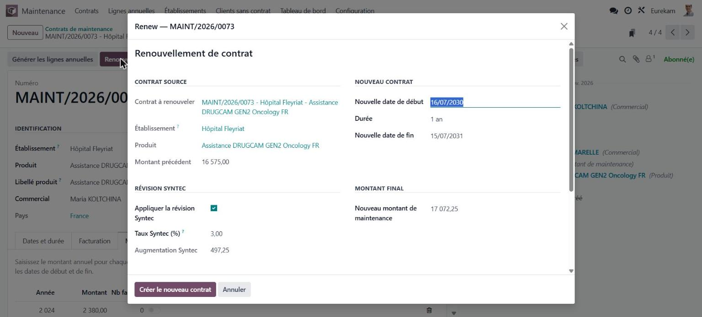
      <figcaption>L'assistant de renouvellement. Le taux de <span class="num">3 %</span>
      est modifiable, et le nouveau montant se recalcule immédiatement.</figcaption>
    </figure>
    <p>Un nouveau contrat est créé à l'état Actif et l'ancien passe en Renouvelé. Les
    deux restent liés par les boutons <strong>Renouvelé depuis</strong> et
    <strong>Renouvelé vers</strong>.</p>

    <h3>5.2 Il n'existe plus de facturation directe</h3>
    <p>Toute facture naît d'un devis, sans exception. Le bouton « Créer les factures du
    contrat » a été retiré : il créait des brouillons en court-circuitant le devis, et
    ceux-ci ne suivaient pas les modifications ultérieures des montants annuels. Deux
    factures pouvaient coexister pour la même période sans que rien ne l'empêche.</p>
    <p>Pour un cas vraiment exceptionnel, un comptable garde la possibilité de créer une
    facture à la main dans l'application Facturation ; elle ne sera simplement rattachée
    à aucun contrat.</p>

    <h3>5.3 Contrat et devis restent synchronisés</h3>
    <p>Les montants annuels et les devis ne peuvent plus diverger : modifier l'un met
    l'autre à jour, dans les deux sens, avec une trace dans le fil de discussion.</p>
    <ul>
      <li>Vous modifiez un <strong>montant annuel</strong> : les devis de cette année
      sont recalculés et le montant redécoupé selon la cadence.</li>
      <li>Vous modifiez une <strong>ligne de devis</strong>, après une renégociation ou
      une remise : le montant annuel du contrat devient le total du devis.</li>
    </ul>
    <div class="bloc attention">
      <p class="titre">Deux limites volontaires</p>
      <p>Une <strong>commande confirmée</strong> n'est jamais réécrite : c'est un
      engagement commercial. Le contrat vous le signale dans le fil et vous laisse
      décider. Une ligne <strong>déjà facturée</strong> n'est pas touchée non plus.
      Les modules facturables ont leur propre montant et n'entrent jamais dans le calcul
      du montant annuel.</p>
    </div>

    <h3>5.4 Période intégrale</h3>
    <p>Pour facturer l'intégralité du contrat en une seule fois, sélectionnez la cadence
    <strong>Période intégrale</strong> dans l'onglet Facturation, puis choisissez le
    périmètre « Intégralité du contrat » dans l'assistant. La commande ne portera qu'une
    seule ligne, pour le total du contrat.</p>

    <h3>5.5 Forcer la mise à jour de l'état</h3>
    <p>L'état d'un contrat est recalculé chaque nuit. Pour forcer le recalcul
    immédiatement, par exemple après avoir modifié la date de fin, cliquez
    <strong>Recalculer l'état</strong> dans le bandeau.</p>

    <h3>5.6 Facturer un module en plus de la maintenance</h3>
    <p>Dans l'onglet Facturation, section <strong>Modules facturables</strong>, ajoutez
    une ligne : le module, son montant annuel, l'année de début et, si besoin, l'année de
    fin, ainsi que l'article à faire apparaître.</p>
    <div class="bloc">
      <p class="titre">Exemple</p>
      <p>Contrat <span class="num">2025→2029</span>, cadence trimestrielle, module
      « Statistique Premium » à <span class="num">4 000 €</span> par an facturé à partir
      de <span class="num">2027</span>. Le BC <span class="num">2026</span> ne contient
      que la maintenance ; à partir du BC <span class="num">2027</span>, quatre lignes de
      <span class="num">1 000 €</span> s'ajoutent automatiquement.</p>
    </div>
  </div>
</section>

<section id="support" class="band sec" style="background:var(--surface-card)">
  <div class="wrap">
    <p class="kicker">• 06</p>
    <h2 class="sec-title">Voir le statut d'un client</h2>
    <div class="sec-rule"></div>
    <p>Dès qu'un partenaire a une relation commerciale avec Eurekam, un bandeau coloré
    apparaît en haut de sa fiche. Le support sait ainsi immédiatement à qui il a
    affaire, sans ouvrir le module Maintenance.</p>
    <figure>
      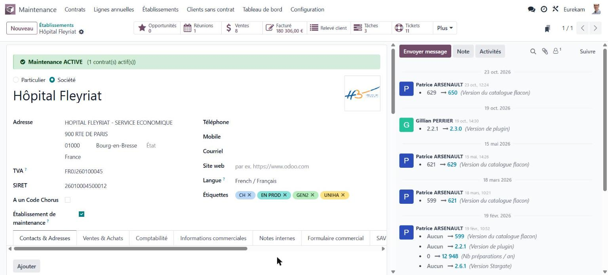
      <figcaption>Bandeau vert : le client est sous contrat, le support s'exerce
      normalement.</figcaption>
    </figure>
    <figure>
      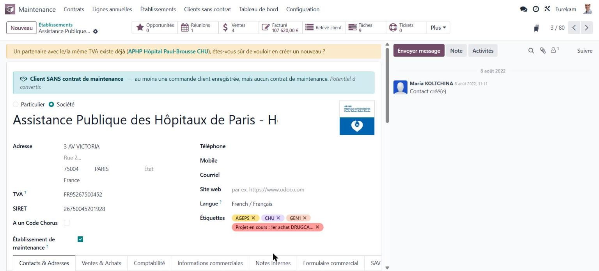
      <figcaption>Bandeau bleu : le client a déjà acheté, mais aucun contrat de
      maintenance n'a encore été tracé. À signaler au commercial.</figcaption>
    </figure>
    <div class="tbl"><table>
      <thead><tr><th>Bandeau</th><th>Sens</th><th>Ce que fait le support</th></tr></thead>
      <tbody>
        <tr><td><span class="pastille p-vert">Maintenance active</span></td><td>Au moins un contrat en cours.</td><td>Support normal.</td></tr>
        <tr><td><span class="pastille p-jaune">Expire bientôt</span></td><td>Aucun actif, mais au moins un expire sous 90 jours.</td><td>Vérifier que le renouvellement est engagé.</td></tr>
        <tr><td><span class="pastille p-rouge">Maintenance expirée</span></td><td>Tous les contrats sont expirés.</td><td>Alerter le commercial ; le support peut être limité.</td></tr>
        <tr><td><span class="pastille p-bleu">Sans contrat</span></td><td>Au moins une commande client, aucun contrat.</td><td>Voir avec le commercial pour le créer.</td></tr>
        <tr><td><span class="pastille p-gris">Aucune relation</span></td><td>Ni contrat, ni commande dans Odoo.</td><td>Vérifier avec le commercial avant tout support.</td></tr>
      </tbody>
    </table></div>
    <p>Le même statut existe en colonne dans la vue liste des Contacts. Elle est masquée
    par défaut pour ne pas alourdir la liste standard : activez-la par le bouton
    d'options, en haut à droite de la liste.</p>
  </div>
</section>

<section id="suivi" class="band sec">
  <div class="wrap">
    <p class="kicker">• 07</p>
    <h2 class="sec-title">Suivi et tableaux de bord</h2>
    <div class="sec-rule"></div>

    <h3>7.1 La liste des contrats</h3>
    <p><strong>Maintenance → Contrats</strong> s'ouvre filtré sur les contrats actifs.
    Retirez le filtre « Actif » pour voir aussi les brouillons, les renouvelés et les
    expirés.</p>
    <figure>
      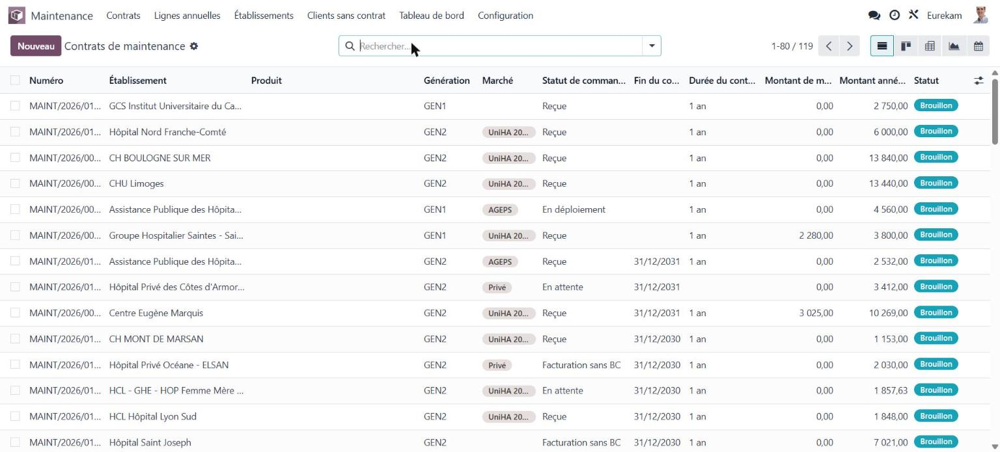
      <figcaption>La vue liste, triable et exportable. Les colonnes reprennent les
      informations du suivi Notion historique.</figcaption>
    </figure>
    <figure>
      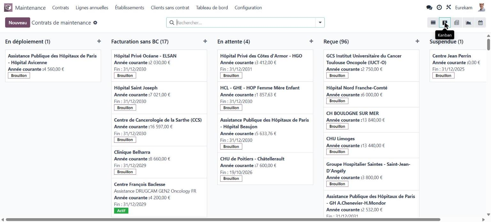
      <figcaption>La vue kanban regroupe par <b>statut de commande</b>. Elle met en
      évidence les contrats en attente et ceux facturés sans BC.</figcaption>
    </figure>

    <h3>7.2 Le tableau de bord</h3>
    <p><strong>Maintenance → Tableau de bord</strong> ouvre un tableau croisé configuré :
    les établissements en lignes, la génération en colonnes, le montant de maintenance et
    la valeur totale du contrat en mesures.</p>
    <figure>
      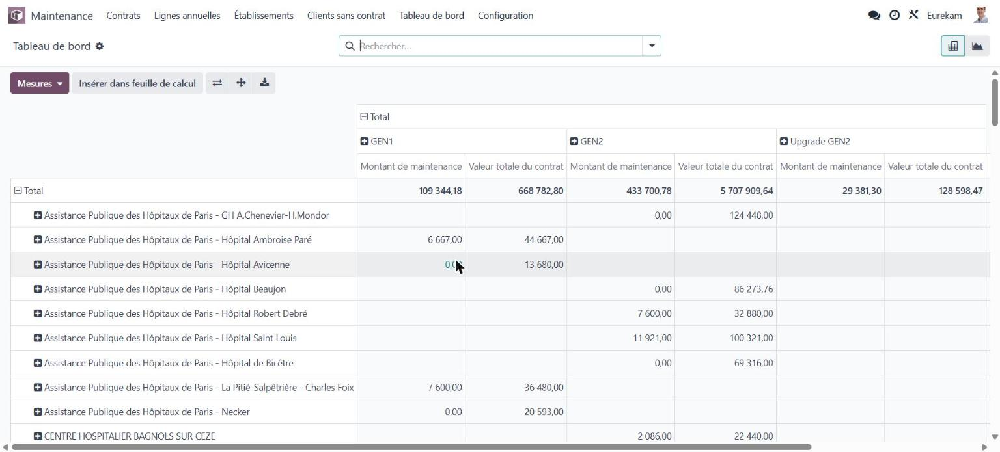
      <figcaption>Le tableau croisé se déplie établissement par établissement et
      s'exporte vers un tableur par le bouton <b>Insérer dans feuille de calcul</b>.</figcaption>
    </figure>

    <h3>7.3 Les lignes annuelles</h3>
    <p><strong>Maintenance → Lignes annuelles</strong> liste toutes les lignes avec leur
    statut de facturation : utile pour repérer ce qui reste à facturer, ou filtrer sur
    l'année courante.</p>
    <figure>
      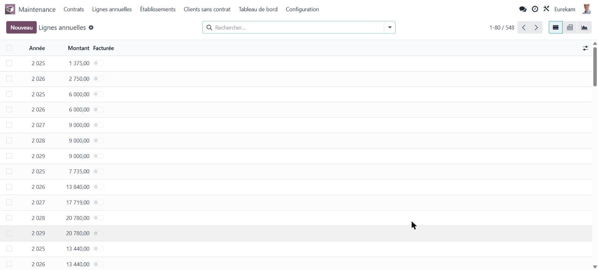
      <figcaption>En l'état, cette vue n'affiche que l'année, le montant et l'indicateur
      de facturation. <b>Ni le contrat ni l'établissement n'y figurent</b>, ce qui rend
      les lignes indiscernables : ajoutez ces colonnes par le bouton d'options avant de
      vous en servir.</figcaption>
    </figure>

    <h3>7.4 Les clients sans contrat</h3>
    <p>Cette liste recense les clients ayant au moins une commande de vente mais aucun
    contrat de maintenance. C'est l'outil de couverture commerciale : il met en évidence
    les clients pour lesquels un contrat devrait exister.</p>
    <figure>
      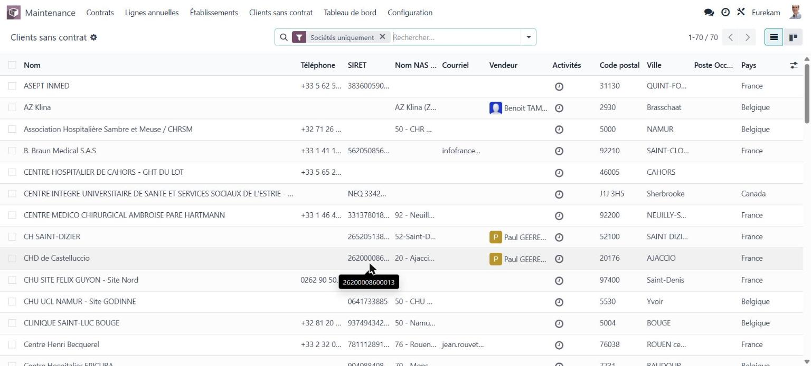
      <figcaption>Pour créer un contrat depuis cette liste, cochez le client puis passez
      par le menu <b>Action</b> et « Créer un contrat de maintenance ».</figcaption>
    </figure>
    <div class="bloc attention">
      <p class="titre">N'utilisez pas « Nouveau » sur cet écran</p>
      <p>Le bouton « Nouveau » créerait un simple contact, pas un contrat. Passez
      toujours par le menu <strong>Action</strong>. Dès qu'un contrat existe, le client
      disparaît de cette liste.</p>
    </div>

    <h3>7.5 Les alertes d'expiration</h3>
    <p>Une tâche planifiée s'exécute chaque nuit. Elle bascule les contrats en
    <strong>Expire bientôt</strong> quand la date de fin tombe dans les 90 jours, puis en
    <strong>Expiré</strong> une fois la date passée. Elle envoie un courriel au commercial
    dans le premier cas, au commercial et à tous les managers dans le second.</p>

    <h3>7.6 La vue calendrier</h3>
    <figure>
      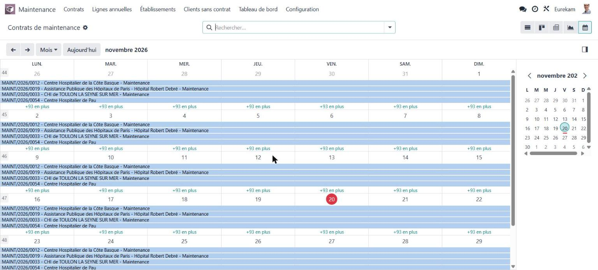
      <figcaption>À connaître avant de l'ouvrir : comme un contrat court sur plusieurs
      années, <b>il occupe tous les jours de la période</b>. Le calendrier affiche donc
      la quasi-totalité du portefeuille chaque jour. Il n'est exploitable qu'après avoir
      filtré sur un établissement ou une année.</figcaption>
    </figure>
  </div>
</section>

<section id="configuration" class="band sec" style="background:var(--surface-card)">
  <div class="wrap">
    <p class="kicker">• 08</p>
    <h2 class="sec-title">Configuration</h2>
    <div class="sec-rule"></div>
    <p>Réservé aux managers. Ces listes sont faites pour évoluer sans intervention
    technique : quand une GEN3 arrivera ou qu'un nouveau marché s'ouvrira, vous les
    ajouterez vous-mêmes.</p>
    <figure>
      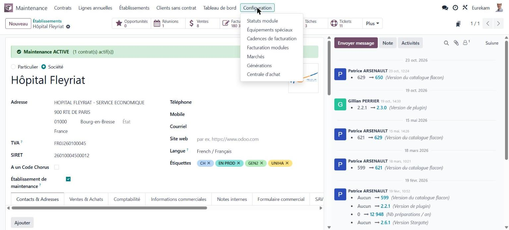
      <figcaption>Les sept listes de configuration du module.</figcaption>
    </figure>
    <div class="tbl"><table>
      <thead><tr><th>Liste</th><th>Contenu et usage</th></tr></thead>
      <tbody>
        <tr><td><strong>Statuts module</strong></td><td>Beta-test, activé non valorisé, activé valorisé, non précisé, statistique, essais cliniques.</td></tr>
        <tr><td><strong>Équipements spéciaux</strong></td><td>Robot, spectrophotomètre. À compléter selon les équipements clients.</td></tr>
        <tr><td><strong>Cadences de facturation</strong></td><td>Annuelle, à échu, à échoir, période intégrale, semestrielle, trimestrielle.</td></tr>
        <tr><td><strong>Facturation modules</strong></td><td>Modules statistique et essai clinique, leurs variantes Premium et offertes, module beta testeur. Chacun peut porter un article par défaut.</td></tr>
        <tr><td><strong>Marchés</strong></td><td>UniHA par millésime, AGEPS, RESAH, marché interne, privé, distributeur.</td></tr>
        <tr><td><strong>Générations</strong></td><td>GEN1, GEN2, Upgrade GEN2.</td></tr>
        <tr><td><strong>Centrale d'achat</strong></td><td>UniHA, AGEPS, RESAH, Unicancer, ELSAN, Ramsay Santé, privé, marché interne, industriel.</td></tr>
      </tbody>
    </table></div>
    <div class="bloc danger">
      <p class="titre">Ne modifiez pas les codes des cadences</p>
      <p>Les codes techniques des cadences (<code>annual</code>, <code>quarterly</code>,
      <code>semi_annual</code>, <code>full_period</code>, <code>overdue</code>,
      <code>upcoming</code>) sont utilisés par le module pour découper les montants.
      Le libellé affiché est librement modifiable ; le code ne l'est pas.</p>
    </div>
  </div>
</section>

<section id="faq" class="band sec">
  <div class="wrap">
    <p class="kicker">• 09</p>
    <h2 class="sec-title">Questions fréquentes</h2>
    <div class="sec-rule"></div>

    <details><summary>Le menu Maintenance n'apparaît pas</summary>
      <div class="corps"><p>Le groupe ne vous a pas été attribué. Demandez à un manager
      d'ajouter « Maintenance Eurekam / Utilisateur » sur votre compte, dans
      Configuration → Utilisateurs, onglet Droits d'accès.</p></div></details>

    <details><summary>J'ai créé un contrat mais je ne peux pas l'activer</summary>
      <div class="corps"><p>Vérifiez les dates de début et de fin, et surtout le champ
      <strong>Produit</strong> : un article Odoo doit être rattaché, le libellé produit
      seul ne suffit pas.</p></div></details>

    <details><summary>Le bouton « Créer les factures du contrat » a disparu</summary>
      <div class="corps"><p>C'est voulu : il a été retiré. Toute facture passe désormais
      par « Créer le devis », puis par la facturation de chaque ligne.</p></div></details>

    <details><summary>Le bouton « Créer le devis » est grisé</summary>
      <div class="corps"><p>Le contrat doit être à l'état <strong>Actif</strong> ou
      <strong>Expire bientôt</strong>, et non Brouillon, Renouvelé ou Annulé.</p></div></details>

    <details><summary>La commande a quatre lignes, je ne veux en facturer qu'une</summary>
      <div class="corps"><p>C'est le fonctionnement attendu. Sur la commande confirmée,
      cliquez « Créer une facture » et mettez <code>0</code> dans la colonne « Quantité à
      facturer » pour les trois lignes à ne pas facturer. Revenez à l'échéance
      suivante.</p></div></details>

    <details><summary>Un contrat est Actif alors que sa date de fin est passée</summary>
      <div class="corps"><p>La tâche de nuit n'a pas encore tourné. Cliquez
      <strong>Recalculer l'état</strong> dans le bandeau pour forcer la bascule.</p></div></details>

    <details><summary>« Une seule cadence de période est autorisée »</summary>
      <div class="corps"><p>Vous avez sélectionné deux cadences de période, par exemple
      annuelle et trimestrielle. N'en gardez qu'une, la plus fine si plusieurs
      s'appliquent.</p></div></details>

    <details><summary>L'assistant de renouvellement propose une date de début inattendue</summary>
      <div class="corps"><p>Il part du lendemain de la date de fin du contrat précédent.
      Si celui-ci n'a pas de date de fin, corrigez la date dans l'assistant.</p></div></details>

    <details><summary>Je veux supprimer un contrat de test</summary>
      <div class="corps"><p>Seul un manager peut supprimer. Les utilisateurs standards
      disposent de l'annulation, qui conserve l'historique.</p></div></details>

    <details><summary>Le client a envoyé un avenant qui change le montant d'une année</summary>
      <div class="corps"><p>Modifiez la ligne concernée dans l'onglet Montants annuels.
      Le total se met à jour et les devis non confirmés de cette année sont recalculés.
      Si une commande était déjà confirmée, elle n'est pas réécrite : le fil de discussion
      vous le signale et vous décidez.</p></div></details>
  </div>
</section>

<section id="glossaire" class="band sec" style="background:var(--surface-card)">
  <div class="wrap">
    <p class="kicker">• 10</p>
    <h2 class="sec-title">Glossaire des champs</h2>
    <div class="sec-rule"></div>
    <h3>Sur un contrat</h3>
    <div class="tbl"><table>
      <thead><tr><th>Champ</th><th>Nom technique</th><th>Description</th></tr></thead>
      <tbody>
        <tr><td>Référence</td><td><code>name</code></td><td>Construit automatiquement : numéro, établissement, produit.</td></tr>
        <tr><td>Numéro</td><td><code>sequence_number</code></td><td><code>MAINT/AAAA/NNNN</code>.</td></tr>
        <tr><td>Établissement</td><td><code>partner_id</code></td><td>Lien vers le contact client.</td></tr>
        <tr><td>Produit</td><td><code>product_id</code></td><td>Article Odoo. Obligatoire pour activer le contrat.</td></tr>
        <tr><td>Libellé produit</td><td><code>product_name</code></td><td>Texte repris sur les lignes de devis et de facture.</td></tr>
        <tr><td>Commercial</td><td><code>commercial_id</code></td><td>Utilisateur en charge ; destinataire des alertes.</td></tr>
        <tr><td>Génération</td><td><code>gen_id</code></td><td>Liste éditable.</td></tr>
        <tr><td>Marché</td><td><code>market_type_ids</code></td><td>Liste éditable, plusieurs valeurs possibles.</td></tr>
        <tr><td>Statut de commande</td><td><code>order_status</code></td><td>Devis envoyé, reçue, en attente, facturation sans BC, en déploiement, suspendue.</td></tr>
        <tr><td>Début et fin</td><td><code>date_start</code>, <code>date_end</code></td><td>Dates du contrat.</td></tr>
        <tr><td>Durée commandée</td><td><code>duration</code></td><td>De 6 mois à 5 ans.</td></tr>
        <tr><td>Jours avant expiration</td><td><code>days_to_expiry</code></td><td>Calculé en temps réel.</td></tr>
        <tr><td>Montant de maintenance</td><td><code>maintenance_amount</code></td><td>Référence servant à pré-remplir. Non facturé.</td></tr>
        <tr><td>Niveau de facturation</td><td><code>billing_level</code></td><td>0, 25, 50, 75 ou 100 %.</td></tr>
        <tr><td>Révision Syntec</td><td><code>syntec_revision</code></td><td>Oui ou non.</td></tr>
        <tr><td>Cadences</td><td><code>billing_frequency_ids</code></td><td>Une cadence de période et un terme.</td></tr>
        <tr><td>Modules facturables</td><td><code>contract_module_line_ids</code></td><td>Modules facturés en plus de la maintenance.</td></tr>
        <tr><td>État</td><td><code>state</code></td><td>Brouillon, actif, expire bientôt, expiré, renouvelé, annulé.</td></tr>
      </tbody>
    </table></div>
    <h3>Sur une commande client</h3>
    <div class="tbl"><table>
      <thead><tr><th>Champ</th><th>Nom technique</th><th>Description</th></tr></thead>
      <tbody>
        <tr><td>Référence BC client</td><td><code>client_order_ref</code></td><td>Numéro du bon de commande du client.</td></tr>
        <tr><td>Contrat maintenance</td><td><code>eurekam_maintenance_contract_id</code></td><td>Lien vers le contrat.</td></tr>
        <tr><td>Année couverte</td><td><code>eurekam_maintenance_year</code></td><td>Année couverte ; 0 signifie l'intégralité du contrat.</td></tr>
        <tr><td>Période maintenance</td><td><code>maintenance_period_label</code></td><td>Sur la ligne : trimestre, semestre, année ou période intégrale.</td></tr>
      </tbody>
    </table></div>
  </div>
</section>

<footer class="band pied">
  <div class="wrap">
    <h2>Une question, un dysfonctionnement</h2>
    <p>Écrivez à <a href="mailto:loic.tamarelle@eurekam.fr">loic.tamarelle@eurekam.fr</a>
    en précisant l'adresse exacte de l'écran concerné, telle qu'elle apparaît dans le
    navigateur, la suite des actions effectuées, le message d'erreur exact et, si
    possible, une copie d'écran.</p>
    <p class="legal">Module <code style="background:#3a3838;border-color:#4a4747;color:#d8d6d6">eurekam_maintenance</code>
    version <span class="num">18.0.2.0.0</span> — Odoo 18 Enterprise.
    Document interne EUREKAM. Diffusion restreinte sans l'accord express d'Eurekam.</p>
  </div>
</footer>
